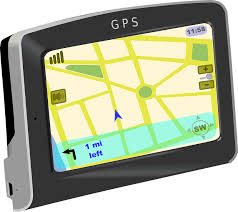

IMAN FAJAR ARTIKEL

Contoh perhitungan koodinat D°M'S" (GPS) ke kordinat DD°
Jika pada layar GPS tertera : 7°48'10.2"S , 110°22'26.9"E, artinya:
S (South / Lintang Selatan / Latitude) : 7 derajat 48 menit 10.2 detik
E (Bujur / Longitude) : 110 derajat 22 menit 26.9 detik
Rumus :
Koordinat desimal = derajat + (menit/60) + (detik/3600) maka
S = 7 + (48/60) + (10.2/3600) = 7.8028333
E =110 + (22/60) + (26.9/3600) = 110.374138
Tambahkan minus (-) pada koordinat latitude untuk lokasi yang berada di sebelah selatan garis equator (karena tertulis S atau South atau Lintang Selatan). Jadi, koordinat desimal yang didapat adalah :
Latitude (Lintang) : -7.8028333
Longitude (Bujur) : 110.374138
source:http://www.artikelteknologi.com/2016/09/cara-membaca-gps-menghitung-koordinat.html
Cara Membaca GPS dan Menghitung Koordinat Latitude Longitude
Feb 19, 2017Views : 5,487Angka koordinat lokasi bumi dibagi menjadi 3 format, koordinat di Google Maps berbeda dengan dengan koordinat di GPS (Global Positioning System). Namun pada beberapa GPS sudah mencantumkan ketiga jenis koordinat. Berikut ini adalah ketiga jenis koordinat :
Koordinat ini paling umum digunakan untuk GPS dengan akurasi. Contoh koordinat lokasi bumi dengan D°M'S" : 7°48'10.2"S 110°22'26.9"E Derajat, menit, desimal.Paling umum digunakan pada perangkat elektronik. Contoh : 41 24.2028, 2 10.441. Angka 41 misalnya adalah derajat, dan angka setelah 41 adalah angka dari pembagian 60 dari koordinat desimal. Derajat digunakan untuk koordinat komputer. Paling sederhana dengan memasukan 2 angka koordinat decimal -7.802845, 110.374136.Contoh perhitungan koodinat D°M'S" (GPS) ke kordinat DD°
Jika pada layar GPS tertera : 7°48'10.2"S , 110°22'26.9"E, artinya:
S (South / Lintang Selatan / Latitude) : 7 derajat 48 menit 10.2 detik
E (Bujur / Longitude) : 110 derajat 22 menit 26.9 detik
Rumus :
Koordinat desimal = derajat + (menit/60) + (detik/3600) maka
S = 7 + (48/60) + (10.2/3600) = 7.8028333
E =110 + (22/60) + (26.9/3600) = 110.374138
Tambahkan minus (-) pada koordinat latitude untuk lokasi yang berada di sebelah selatan garis equator (karena tertulis S atau South atau Lintang Selatan). Jadi, koordinat desimal yang didapat adalah :
Latitude (Lintang) : -7.8028333
Longitude (Bujur) : 110.374138
source:http://www.artikelteknologi.com/2016/09/cara-membaca-gps-menghitung-koordinat.html
Tentang Saya(Owner)
Saya Imanu F.A., Mahasiswa Universitas Teknologi Yogyakarta, jurusan Teknik informatika,angkatan 2014
Kumpulan Artikel
- Cara Membaca GPS dan Menghitung Koordinat Latitude Longitude
- Sejarah dan Fakta Menarik Tentang Google
- (article3)